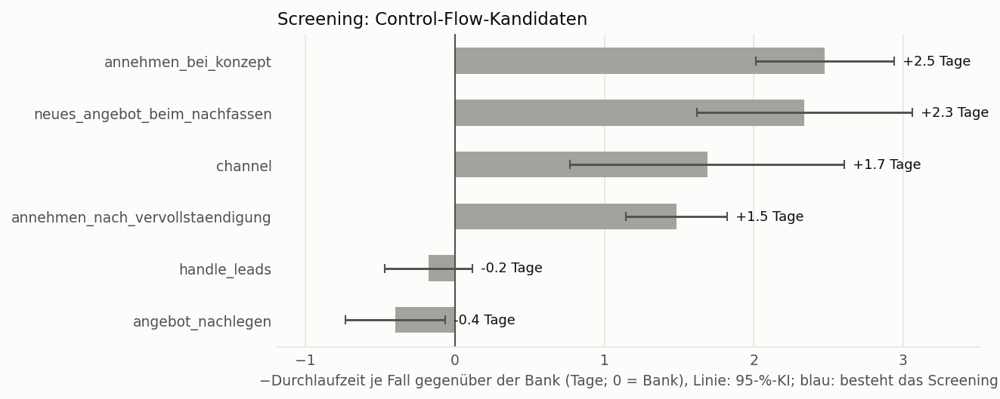
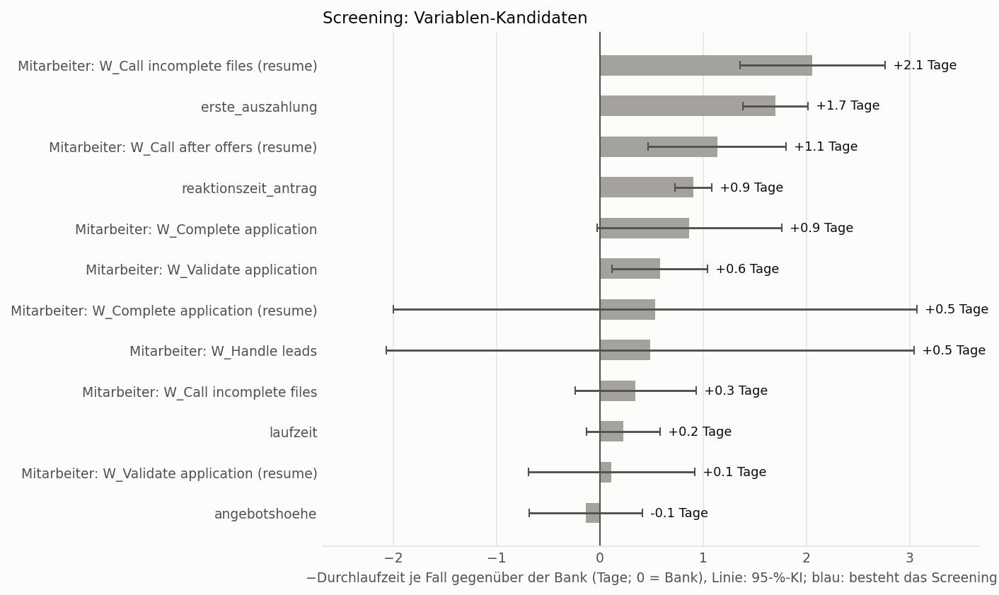

| name | art | intervention | |
|---|---|---|---|
| 0 | channel | control_flow | channel |
| 1 | handle_leads | control_flow | |
| 2 | annehmen_nach_vervollstaendigung | control_flow | |
| 3 | angebot_nachlegen | control_flow | |
| 4 | neues_angebot_beim_nachfassen | control_flow | |
| 5 | Mitarbeiter: W_Call incomplete files | variable | |
| 6 | Mitarbeiter: W_Complete application | variable | |
| 7 | Mitarbeiter: W_Handle leads | variable | |
| 8 | Mitarbeiter: W_Validate application | variable | |
| 9 | Mitarbeiter: W_Call after offers (resume) | variable | |
| 10 | Mitarbeiter: W_Call incomplete files (resume) | variable | |
| 11 | Mitarbeiter: W_Complete application (resume) | variable | |
| 12 | Mitarbeiter: W_Validate application (resume) | variable | |
| 13 | annehmen_bei_konzept | control_flow | |
| 14 | angebotshoehe | variable | |
| 15 | laufzeit | variable | |
| 16 | erste_auszahlung | variable | |
| 17 | reaktionszeit_antrag | variable | |
| 18 | Mitarbeiter: W_Assess potential fraud | variable | |
| 19 | Mitarbeiter: W_Handle leads (resume) | variable |
| Wert | |
|---|---|
| Kandidat | Mitarbeiter: W_Complete application |
| Art | resource |
| Fall | Application_53888887 |
| Entscheidungs-Event | Nr. 2: W_Complete application (start) |
| case:LoanGoal | Remaining debt home |
| case:ApplicationType | New credit |
| case:RequestedAmount | 20.000 |
| Option T | User_43 |
| Outcome Y | -0,083 |
| Fälle mit Entscheidungspunkt | 29,646 |
| Merkmale | 30 |
| Merkmal | Confounder | Gruppe | Typ | Wert | lesbar | |
|---|---|---|---|---|---|---|
| Nr. | ||||||
| 1 | case:LoanGoal | Fall | Fallattribut (gilt für den ganzen Fall) | kategorial | Remaining debt home | |
| 2 | case:ApplicationType | Fall | Fallattribut (gilt für den ganzen Fall) | kategorial | New credit | |
| 3 | case:RequestedAmount | Fall | Fallattribut (gilt für den ganzen Fall) | Zahl | 20.000 | |
| 4 | last:OfferedAmount | Prefix | Event-Attribut: letzter Wert bis zum Entscheidungspunkt | Zahl | ||
| 5 | last:NumberOfTerms | Prefix | Event-Attribut: letzter Wert bis zum Entscheidungspunkt | Zahl | ||
| 6 | last:MonthlyCost | Prefix | Event-Attribut: letzter Wert bis zum Entscheidungspunkt | Zahl | ||
| 7 | last:FirstWithdrawalAmount | Prefix | Event-Attribut: letzter Wert bis zum Entscheidungspunkt | Zahl | ||
| 8 | n:A_Accepted | Prefix | Verlauf: so oft kam die Aktivität im Prefix vor (jedes Event, auch start) | Zahl | 0 | |
| 9 | n:A_Concept | Prefix | Verlauf: so oft kam die Aktivität im Prefix vor (jedes Event, auch start) | Zahl | 0 | |
| 10 | n:A_Create Application | Prefix | Verlauf: so oft kam die Aktivität im Prefix vor (jedes Event, auch start) | Zahl | 1 | |
| 11 | n:A_Submitted | Prefix | Verlauf: so oft kam die Aktivität im Prefix vor (jedes Event, auch start) | Zahl | 0 | |
| 12 | n:O_Cancelled | Prefix | Verlauf: so oft kam die Aktivität im Prefix vor (jedes Event, auch start) | Zahl | 0 | |
| 13 | n:O_Create Offer | Prefix | Verlauf: so oft kam die Aktivität im Prefix vor (jedes Event, auch start) | Zahl | 0 | |
| 14 | n:O_Created | Prefix | Verlauf: so oft kam die Aktivität im Prefix vor (jedes Event, auch start) | Zahl | 0 | |
| 15 | n:W_Assess potential fraud:suspend | Prefix | Verlauf: so oft kam die Aktivität im Prefix vor (jedes Event, auch start) | Zahl | 0 | |
| 16 | n:W_Complete application:schedule | Prefix | Verlauf: so oft kam die Aktivität im Prefix vor (jedes Event, auch start) | Zahl | 1 | |
| 17 | n:W_Complete application:start | Prefix | Verlauf: so oft kam die Aktivität im Prefix vor (jedes Event, auch start) | Zahl | 1 | |
| 18 | n:W_Handle leads | Prefix | Verlauf: so oft kam die Aktivität im Prefix vor (jedes Event, auch start) | Zahl | 0 | |
| 19 | n:W_Handle leads:resume | Prefix | Verlauf: so oft kam die Aktivität im Prefix vor (jedes Event, auch start) | Zahl | 0 | |
| 20 | n:W_Handle leads:schedule | Prefix | Verlauf: so oft kam die Aktivität im Prefix vor (jedes Event, auch start) | Zahl | 0 | |
| 21 | n:W_Handle leads:start | Prefix | Verlauf: so oft kam die Aktivität im Prefix vor (jedes Event, auch start) | Zahl | 0 | |
| 22 | n:W_Handle leads:suspend | Prefix | Verlauf: so oft kam die Aktivität im Prefix vor (jedes Event, auch start) | Zahl | 0 | |
| 23 | n:W_Handle leads:withdraw | Prefix | Verlauf: so oft kam die Aktivität im Prefix vor (jedes Event, auch start) | Zahl | 0 | |
| 24 | previous_activity | Prefix | Verlauf: Aktivität vor dem Entscheidungs-Event | kategorial | W_Complete application:schedule | |
| 25 | events | Prefix | Verlauf: Events im Prefix | Zahl | 3 | |
| 26 | elapsed_h | Prefix | Zeit: Stunden seit Fallbeginn | Zahl | 0,000 | |
| 27 | hour | Prefix | Kalender am Entscheidungspunkt | Zahl | 18 | 18 Uhr |
| 28 | weekday | Prefix | Kalender am Entscheidungspunkt | Zahl | 0 | Mo |
| 29 | month | Prefix | Kalender am Entscheidungspunkt | Zahl | 24.194 | 2016-02 |
| 30 | prev_worker | Prefix | Zuteilung: wer zuletzt am Fall gearbeitet hat | kategorial | User_43 |
| Preprocessing | Action | org:resource | concept:name | EventOrigin | EventID | lifecycle:transition | time:timestamp | case:LoanGoal | case:ApplicationType | case:concept:name | case:RequestedAmount | FirstWithdrawalAmount | NumberOfTerms | Accepted | MonthlyCost | Selected | CreditScore | OfferedAmount | OfferID | |
|---|---|---|---|---|---|---|---|---|---|---|---|---|---|---|---|---|---|---|---|---|
| Nr. | ||||||||||||||||||||
| 0 | bleibt | Created | User_43 | A_Create Application | Application | Application_53888887 | complete | 2016-02-22 18:14:40.375 | Remaining debt home | New credit | Application_53888887 | 20.000 | ||||||||
| 1 | bleibt | Created | User_43 | W_Complete application | Workflow | Workitem_1577936330 | schedule | 2016-02-22 18:14:40.390 | Remaining debt home | New credit | Application_53888887 | 20.000 | ||||||||
| 2 | bleibt | Obtained | User_43 | W_Complete application | Workflow | Workitem_1894386566 | start | 2016-02-22 18:14:40.394 | Remaining debt home | New credit | Application_53888887 | 20.000 | ||||||||
| 3 | bleibt | statechange | User_43 | A_Concept | Application | ApplState_265714257 | complete | 2016-02-22 18:14:40.397 | Remaining debt home | New credit | Application_53888887 | 20.000 | ||||||||
| 4 | bleibt | statechange | User_43 | A_Accepted | Application | ApplState_699012958 | complete | 2016-02-22 18:20:01.123 | Remaining debt home | New credit | Application_53888887 | 20.000 | ||||||||
| 5 | bleibt | Created | User_43 | O_Create Offer | Offer | Offer_2003475982 | complete | 2016-02-22 18:28:11.190 | Remaining debt home | New credit | Application_53888887 | 20.000 | 0 | 127 | False | 157 | False | 0 | 15.700 | |
| 6 | bleibt | statechange | User_43 | O_Created | Offer | OfferState_1647593553 | complete | 2016-02-22 18:28:12.363 | Remaining debt home | New credit | Application_53888887 | 20.000 | Offer_2003475982 | |||||||
| 7 | bleibt | statechange | User_43 | O_Sent (mail and online) | Offer | OfferState_1077408767 | complete | 2016-02-22 18:35:24.419 | Remaining debt home | New credit | Application_53888887 | 20.000 | Offer_2003475982 | |||||||
| 8 | bleibt | Deleted | User_43 | W_Complete application | Workflow | Workitem_1962347453 | complete | 2016-02-22 18:35:24.445 | Remaining debt home | New credit | Application_53888887 | 20.000 | ||||||||
| 9 | bleibt | Created | User_43 | W_Call after offers | Workflow | Workitem_1645957094 | schedule | 2016-02-22 18:35:24.458 | Remaining debt home | New credit | Application_53888887 | 20.000 | ||||||||
| 10 | bleibt | Obtained | User_43 | W_Call after offers | Workflow | Workitem_1903070650 | start | 2016-02-22 18:35:24.464 | Remaining debt home | New credit | Application_53888887 | 20.000 | ||||||||
| 11 | bleibt | statechange | User_43 | A_Complete | Application | ApplState_148756152 | complete | 2016-02-22 18:35:24.468 | Remaining debt home | New credit | Application_53888887 | 20.000 | ||||||||
| 12 | bleibt | Released | User_43 | W_Call after offers | Workflow | Workitem_1126757333 | suspend | 2016-02-22 18:45:08.093 | Remaining debt home | New credit | Application_53888887 | 20.000 | ||||||||
| 13 | bleibt | statechange | User_37 | O_Cancelled | Offer | OfferState_1797865398 | complete | 2016-02-22 20:09:58.360 | Remaining debt home | New credit | Application_53888887 | 20.000 | Offer_2003475982 | |||||||
| 14 | bleibt | statechange | User_37 | A_Cancelled | Application | ApplState_1175348080 | complete | 2016-02-22 20:14:16.646 | Remaining debt home | New credit | Application_53888887 | 20.000 | ||||||||
| 15 | bleibt | Deleted | User_37 | W_Call after offers | Workflow | Workitem_772753237 | ate_abort | 2016-02-22 20:14:16.683 | Remaining debt home | New credit | Application_53888887 | 20.000 |
| Teil | Action | org:resource | concept:name | EventOrigin | EventID | lifecycle:transition | time:timestamp | case:LoanGoal | case:ApplicationType | case:concept:name | case:RequestedAmount | FirstWithdrawalAmount | NumberOfTerms | Accepted | MonthlyCost | Selected | CreditScore | OfferedAmount | OfferID | outcome | |
|---|---|---|---|---|---|---|---|---|---|---|---|---|---|---|---|---|---|---|---|---|---|
| Nr. | |||||||||||||||||||||
| 0 | Prefix | Created | User_43 | A_Create Application | Application | Application_53888887 | complete | 2016-02-22 18:14:40.375 | Remaining debt home | New credit | Application_53888887 | 20.000 | -0,083 | ||||||||
| 1 | Prefix | Created | User_43 | W_Complete application | Workflow | Workitem_1577936330 | schedule | 2016-02-22 18:14:40.390 | Remaining debt home | New credit | Application_53888887 | 20.000 | -0,083 | ||||||||
| 2 | Entscheidung | Obtained | User_43 | W_Complete application | Workflow | Workitem_1894386566 | start | 2016-02-22 18:14:40.394 | Remaining debt home | New credit | Application_53888887 | 20.000 | -0,083 | ||||||||
| 3 | danach, nicht in X | statechange | User_43 | A_Concept | Application | ApplState_265714257 | complete | 2016-02-22 18:14:40.397 | Remaining debt home | New credit | Application_53888887 | 20.000 | -0,083 | ||||||||
| 4 | danach, nicht in X | statechange | User_43 | A_Accepted | Application | ApplState_699012958 | complete | 2016-02-22 18:20:01.123 | Remaining debt home | New credit | Application_53888887 | 20.000 | -0,083 | ||||||||
| 5 | danach, nicht in X | Created | User_43 | O_Create Offer | Offer | Offer_2003475982 | complete | 2016-02-22 18:28:11.190 | Remaining debt home | New credit | Application_53888887 | 20.000 | 0 | 127 | False | 157 | False | 0 | 15.700 | -0,083 | |
| 6 | danach, nicht in X | statechange | User_43 | O_Created | Offer | OfferState_1647593553 | complete | 2016-02-22 18:28:12.363 | Remaining debt home | New credit | Application_53888887 | 20.000 | Offer_2003475982 | -0,083 | |||||||
| 7 | danach, nicht in X | statechange | User_43 | O_Sent (mail and online) | Offer | OfferState_1077408767 | complete | 2016-02-22 18:35:24.419 | Remaining debt home | New credit | Application_53888887 | 20.000 | Offer_2003475982 | -0,083 | |||||||
| 8 | danach, nicht in X | Deleted | User_43 | W_Complete application | Workflow | Workitem_1962347453 | complete | 2016-02-22 18:35:24.445 | Remaining debt home | New credit | Application_53888887 | 20.000 | -0,083 | ||||||||
| 9 | danach, nicht in X | Created | User_43 | W_Call after offers | Workflow | Workitem_1645957094 | schedule | 2016-02-22 18:35:24.458 | Remaining debt home | New credit | Application_53888887 | 20.000 | -0,083 | ||||||||
| 10 | danach, nicht in X | Obtained | User_43 | W_Call after offers | Workflow | Workitem_1903070650 | start | 2016-02-22 18:35:24.464 | Remaining debt home | New credit | Application_53888887 | 20.000 | -0,083 | ||||||||
| 11 | danach, nicht in X | statechange | User_43 | A_Complete | Application | ApplState_148756152 | complete | 2016-02-22 18:35:24.468 | Remaining debt home | New credit | Application_53888887 | 20.000 | -0,083 | ||||||||
| 12 | danach, nicht in X | Released | User_43 | W_Call after offers | Workflow | Workitem_1126757333 | suspend | 2016-02-22 18:45:08.093 | Remaining debt home | New credit | Application_53888887 | 20.000 | -0,083 | ||||||||
| 13 | danach, nicht in X | statechange | User_37 | O_Cancelled | Offer | OfferState_1797865398 | complete | 2016-02-22 20:09:58.360 | Remaining debt home | New credit | Application_53888887 | 20.000 | Offer_2003475982 | -0,083 | |||||||
| 14 | danach, nicht in X | statechange | User_37 | A_Cancelled | Application | ApplState_1175348080 | complete | 2016-02-22 20:14:16.646 | Remaining debt home | New credit | Application_53888887 | 20.000 | -0,083 | ||||||||
| 15 | danach, nicht in X | Deleted | User_37 | W_Call after offers | Workflow | Workitem_772753237 | ate_abort | 2016-02-22 20:14:16.683 | Remaining debt home | New credit | Application_53888887 | 20.000 | -0,083 |

| Policy-−Durchlaufzeit | KI unten | KI oben | −Durchlaufzeit ggü. Bank | Bank KI unten | Bank KI oben | Überlappung | Placebo d | |
|---|---|---|---|---|---|---|---|---|
| Kandidat | ||||||||
| channel | 0,104 | -0,785 | 0,993 | 1,688 | 0,770 | 2,606 | 0,063 | -0,035 |
| handle_leads | -0,586 | -0,907 | -0,264 | -0,176 | -0,469 | 0,118 | 0,971 | -0,009 |
| annehmen_nach_vervollstaendigung | -0,659 | -0,916 | -0,402 | 1,483 | 1,144 | 1,822 | 0,915 | 0,022 |
| angebot_nachlegen | -0,511 | -0,863 | -0,160 | -0,400 | -0,733 | -0,068 | 0,804 | 0,017 |
| neues_angebot_beim_nachfassen | -0,475 | -0,913 | -0,037 | 2,340 | 1,618 | 3,061 | 0,427 | -0,061 |
| annehmen_bei_konzept | -0,596 | -0,825 | -0,366 | 2,476 | 2,014 | 2,938 | 0,566 | -0,068 |

| Policy-−Durchlaufzeit | KI unten | KI oben | −Durchlaufzeit ggü. Bank | Bank KI unten | Bank KI oben | Überlappung | Placebo d | Pool | Poolgröße Median | Fälle mit Wahl | Mitarbeitereffekt Streuung | Mitarbeiter mit Effekt | Anteil mit KI ohne 0 | |
|---|---|---|---|---|---|---|---|---|---|---|---|---|---|---|
| Kandidat | ||||||||||||||
| Mitarbeiter: W_Call incomplete files | -0,555 | -1,150 | 0,040 | 0,346 | -0,239 | 0,931 | 0,045 | 0,223 | frei: 141 Mitarbeiter, gewählter in 1 % der Fälle laut Regel außerhalb | 8 | 0,989 | 0,789 | 20 | 0,450 |
| Mitarbeiter: W_Complete application | -0,914 | -1,829 | 0,001 | 0,867 | -0,027 | 1,761 | 0,101 | 0,176 | frei: 136 Mitarbeiter, gewählter in 1 % der Fälle laut Regel außerhalb | 9 | 0,997 | 0,268 | 57 | 0,070 |
| Mitarbeiter: W_Handle leads | -0,138 | -3,460 | 3,184 | 0,487 | -2,069 | 3,044 | 0,455 | 0,132 | frei: 129 Mitarbeiter, gewählter in 1 % der Fälle laut Regel außerhalb | 2 | 0,611 | 0 | 3 | 0 |
| Mitarbeiter: W_Validate application | -0,318 | -0,793 | 0,156 | 0,580 | 0,117 | 1,044 | 0,583 | 0,112 | frei: 141 Mitarbeiter | 5 | 0,997 | 0,067 | 18 | 0,056 |
| Mitarbeiter: W_Call after offers (resume) | 0,075 | -0,619 | 0,769 | 1,138 | 0,469 | 1,806 | 0,190 | 0,261 | frei: 139 Mitarbeiter, gewählter in 1 % der Fälle laut Regel außerhalb | 6 | 0,987 | 0,226 | 33 | 0,061 |
| Mitarbeiter: W_Call incomplete files (resume) | 0,550 | -0,200 | 1,300 | 2,059 | 1,358 | 2,760 | 0,255 | 0,068 | frei: 143 Mitarbeiter, gewählter in 1 % der Fälle laut Regel außerhalb | 5 | 0,986 | 0 | 22 | 0,091 |
| Mitarbeiter: W_Complete application (resume) | -0,358 | -3,129 | 2,413 | 0,536 | -2 | 3,072 | 0,322 | 0,211 | frei: 134 Mitarbeiter, gewählter in 1 % der Fälle laut Regel außerhalb | 4 | 0,952 | 0 | 19 | 0 |
| Mitarbeiter: W_Validate application (resume) | -0,637 | -1,550 | 0,277 | 0,110 | -0,695 | 0,916 | 0,412 | 0,231 | frei: 141 Mitarbeiter, gewählter in 1 % der Fälle laut Regel außerhalb | 5 | 0,961 | 0 | 11 | 0 |
| angebotshoehe | -0,303 | -0,877 | 0,271 | -0,135 | -0,685 | 0,414 | 0,618 | 0,058 | ||||||
| laufzeit | -0,096 | -0,521 | 0,329 | 0,225 | -0,132 | 0,582 | 0,966 | 0,008 | ||||||
| erste_auszahlung | -0,434 | -0,722 | -0,145 | 1,701 | 1,383 | 2,019 | 0,853 | 0,033 | ||||||
| reaktionszeit_antrag | -0,079 | -0,217 | 0,059 | 0,906 | 0,727 | 1,086 | 0,632 | |||||||
| Mitarbeiter: W_Assess potential fraud | frei: 91 Mitarbeiter, gewählter in 5 % der Fälle laut Regel außerhalb | |||||||||||||
| Mitarbeiter: W_Handle leads (resume) | frei: 125 Mitarbeiter, gewählter in 1 % der Fälle laut Regel außerhalb |
| Fälle mit ihm im Pool | Effekt ggü. Pool (AIPW) | Std.-Fehler | KI unten | KI oben | |
|---|---|---|---|---|---|
| Mitarbeiter | |||||
| User_100 | 10620 | 0,619 | 0,197 | 0,233 | 1,004 |
| User_30 | 6822 | -0,797 | 0,562 | -1,897 | 0,304 |
| User_75 | 8898 | 0,484 | 0,352 | -0,206 | 1,175 |
| User_29 | 8137 | 0,777 | 0,378 | 0,037 | 1,517 |
| User_90 | 7664 | 0,237 | 0,256 | -0,264 | 0,738 |
| User_87 | 6708 | 0,608 | 0,415 | -0,205 | 1,420 |
| User_101 | 4962 | 0,694 | 0,332 | 0,044 | 1,344 |
| User_68 | 5832 | 1,018 | 0,630 | -0,216 | 2,252 |
| User_99 | 5143 | -0,680 | 1,033 | -2,705 | 1,346 |
| User_109 | 7726 | -0,204 | 0,369 | -0,927 | 0,519 |
| User_83 | 3705 | 0,784 | 1,080 | -1,332 | 2,900 |
| User_102 | 3728 | -1,042 | 1,580 | -4,138 | 2,054 |
| User_123 | 6208 | -1,159 | 0,271 | -1,691 | -0,627 |
| User_95 | 2216 | 1,989 | 0,938 | 0,151 | 3,827 |
| User_126 | 3558 | -0,898 | 0,415 | -1,712 | -0,085 |
| User_27 | 4103 | -1,661 | 0,358 | -2,363 | -0,959 |
| User_93 | 3328 | 1,050 | 0,514 | 0,043 | 2,057 |
| User_121 | 4251 | -1,373 | 0,345 | -2,049 | -0,697 |
| User_120 | 1950 | -0,775 | 0,664 | -2,076 | 0,526 |
| User_133 | 1407 | -0,239 | 0,266 | -0,761 | 0,282 |
| Fälle mit ihm im Pool | Effekt ggü. Pool (AIPW) | Std.-Fehler | KI unten | KI oben | |
|---|---|---|---|---|---|
| Mitarbeiter | |||||
| User_49 | 6814 | 0,170 | 0,556 | -0,919 | 1,259 |
| User_3 | 5989 | -1,224 | 0,960 | -3,106 | 0,658 |
| User_10 | 9311 | -0,243 | 0,516 | -1,254 | 0,768 |
| User_5 | 11079 | -0,015 | 0,471 | -0,938 | 0,909 |
| User_14 | 7895 | 0,095 | 0,705 | -1,288 | 1,477 |
| User_61 | 3714 | 0,558 | 0,888 | -1,183 | 2,299 |
| User_16 | 5604 | 0,838 | 0,932 | -0,989 | 2,664 |
| User_28 | 6711 | 1,360 | 0,904 | -0,413 | 3,132 |
| User_15 | 4791 | 0,897 | 1,031 | -1,123 | 2,918 |
| User_46 | 4523 | -1,329 | 1,093 | -3,471 | 0,813 |
| User_35 | 4989 | -0,645 | 0,901 | -2,411 | 1,122 |
| User_42 | 6336 | 0,750 | 0,707 | -0,637 | 2,136 |
| User_2 | 9482 | 0,519 | 0,658 | -0,771 | 1,809 |
| User_37 | 3789 | 0,046 | 0,872 | -1,663 | 1,756 |
| User_53 | 5166 | 0,615 | 0,985 | -1,315 | 2,545 |
| User_18 | 4873 | -1,292 | 1,103 | -3,453 | 0,869 |
| User_4 | 4918 | 0,631 | 1,292 | -1,901 | 3,163 |
| User_71 | 4566 | 0,120 | 1,087 | -2,011 | 2,252 |
| User_52 | 5055 | 1,141 | 1,163 | -1,138 | 3,419 |
| User_17 | 3866 | 0,243 | 1,173 | -2,055 | 2,542 |
| User_24 | 3258 | -2,503 | 1,441 | -5,328 | 0,322 |
| User_41 | 5497 | 1,249 | 0,842 | -0,402 | 2,900 |
| User_12 | 3222 | 0,230 | 1,575 | -2,857 | 3,318 |
| User_40 | 3669 | -3,186 | 1,672 | -6,463 | 0,091 |
| User_48 | 4366 | -0,010 | 1,001 | -1,972 | 1,953 |
| User_39 | 4520 | 3,293 | 1,185 | 0,970 | 5,616 |
| User_36 | 6028 | -0,059 | 0,939 | -1,898 | 1,781 |
| User_60 | 6744 | -0,668 | 0,774 | -2,185 | 0,848 |
| User_43 | 4093 | -1,519 | 1,567 | -4,590 | 1,553 |
| User_56 | 2343 | 1,189 | 1,441 | -1,636 | 4,014 |
| User_26 | 5736 | -2,911 | 1,086 | -5,040 | -0,782 |
| User_51 | 4914 | -0,479 | 0,902 | -2,248 | 1,289 |
| User_78 | 2131 | 0,618 | 1,391 | -2,108 | 3,344 |
| User_57 | 3133 | -0,156 | 1,214 | -2,535 | 2,224 |
| User_32 | 2326 | 1,547 | 1,303 | -1,007 | 4,101 |
| User_23 | 3856 | -2,230 | 1,593 | -5,352 | 0,892 |
| User_45 | 3327 | 0,732 | 1,199 | -1,619 | 3,083 |
| User_38 | 3514 | 0,063 | 1,161 | -2,213 | 2,339 |
| User_67 | 2615 | 0,781 | 0,900 | -0,984 | 2,546 |
| User_19 | 3383 | -0,322 | 1,258 | -2,788 | 2,143 |
| User_21 | 4814 | -1,289 | 1,002 | -3,252 | 0,674 |
| User_13 | 2789 | 1,490 | 1,334 | -1,124 | 4,103 |
| User_27 | 6660 | -0,245 | 0,379 | -0,989 | 0,498 |
| User_104 | 1293 | -2,669 | 2,236 | -7,052 | 1,714 |
| User_91 | 665 | -1,274 | 4,257 | -9,619 | 7,069 |
| User_44 | 3294 | 1,308 | 1,575 | -1,779 | 4,395 |
| User_69 | 1296 | -0,144 | 1,170 | -2,436 | 2,148 |
| User_7 | 3705 | -0,013 | 1,572 | -3,094 | 3,069 |
| User_66 | 2594 | 0,539 | 1,755 | -2,901 | 3,979 |
| User_80 | 1385 | -0,125 | 2,503 | -5,030 | 4,780 |
| User_54 | 2503 | 2,060 | 1,787 | -1,443 | 5,562 |
| User_77 | 1405 | 0,558 | 2,247 | -3,845 | 4,962 |
| User_96 | 905 | -1,253 | 2,724 | -6,593 | 4,087 |
| User_63 | 2007 | 0,097 | 1,600 | -3,039 | 3,233 |
| User_11 | 3013 | -4,008 | 1,921 | -7,772 | -0,243 |
| User_31 | 4459 | -0,406 | 1,026 | -2,417 | 1,604 |
| User_81 | 552 | 10,7 | 5,150 | 0,588 | 20,8 |
| Fälle mit ihm im Pool | Effekt ggü. Pool (AIPW) | Std.-Fehler | KI unten | KI oben | |
|---|---|---|---|---|---|
| Mitarbeiter | |||||
| User_14 | 961 | -0,900 | 3,759 | -8,267 | 6,466 |
| User_2 | 1017 | 2,495 | 3,347 | -4,064 | 9,055 |
| User_5 | 1165 | 0,252 | 2,914 | -5,460 | 5,963 |
| Fälle mit ihm im Pool | Effekt ggü. Pool (AIPW) | Std.-Fehler | KI unten | KI oben | |
|---|---|---|---|---|---|
| Mitarbeiter | |||||
| User_123 | 9582 | 0,219 | 0,216 | -0,205 | 0,643 |
| User_121 | 7551 | -0,138 | 0,293 | -0,712 | 0,436 |
| User_116 | 7407 | 0,228 | 0,261 | -0,285 | 0,740 |
| User_118 | 6691 | -0,133 | 0,283 | -0,688 | 0,423 |
| User_113 | 7588 | 0,491 | 0,317 | -0,130 | 1,112 |
| User_126 | 5848 | 0,098 | 0,342 | -0,573 | 0,768 |
| User_117 | 5077 | 0,069 | 0,318 | -0,555 | 0,692 |
| User_112 | 7926 | -0,348 | 0,574 | -1,472 | 0,777 |
| User_27 | 6260 | -0,163 | 0,362 | -0,873 | 0,546 |
| User_119 | 4576 | -0,834 | 0,761 | -2,325 | 0,657 |
| User_120 | 3304 | 0,613 | 0,776 | -0,908 | 2,134 |
| User_122 | 4041 | -0,714 | 0,872 | -2,422 | 0,996 |
| User_131 | 2729 | 0,687 | 0,678 | -0,641 | 2,016 |
| User_125 | 2726 | 1,033 | 0,881 | -0,694 | 2,760 |
| User_134 | 1874 | 0,402 | 0,533 | -0,643 | 1,446 |
| User_133 | 1814 | 1,089 | 0,814 | -0,507 | 2,684 |
| User_53 | 5325 | 0,808 | 0,259 | 0,301 | 1,315 |
| User_114 | 1761 | 0,674 | 0,885 | -1,061 | 2,409 |
| Fälle mit ihm im Pool | Effekt ggü. Pool (AIPW) | Std.-Fehler | KI unten | KI oben | |
|---|---|---|---|---|---|
| Mitarbeiter | |||||
| User_5 | 10240 | 0,466 | 0,469 | -0,453 | 1,384 |
| User_3 | 4808 | 0,451 | 0,447 | -0,425 | 1,326 |
| User_2 | 8017 | 0,186 | 0,505 | -0,804 | 1,176 |
| User_31 | 4109 | -0,619 | 0,482 | -1,563 | 0,325 |
| User_18 | 3290 | -0,701 | 0,827 | -2,321 | 0,919 |
| User_24 | 3104 | -0,992 | 1,372 | -3,681 | 1,696 |
| User_16 | 3649 | -0,564 | 0,608 | -1,756 | 0,629 |
| User_15 | 3837 | 0,973 | 0,951 | -0,890 | 2,836 |
| User_132 | 852 | -0,799 | 0,740 | -2,248 | 0,651 |
| User_40 | 2632 | 0,019 | 0,632 | -1,220 | 1,259 |
| User_28 | 5438 | -0,551 | 1,126 | -2,758 | 1,656 |
| User_45 | 2839 | 1,850 | 1,292 | -0,683 | 4,383 |
| User_46 | 3096 | 0,221 | 0,765 | -1,279 | 1,721 |
| User_26 | 4841 | -0,108 | 0,733 | -1,544 | 1,328 |
| User_17 | 4296 | 0,242 | 0,466 | -0,671 | 1,156 |
| User_85 | 1877 | -0,454 | 1,029 | -2,471 | 1,563 |
| User_41 | 4712 | -0,440 | 0,631 | -1,677 | 0,796 |
| User_14 | 6244 | 1,051 | 0,667 | -0,256 | 2,359 |
| User_19 | 3359 | 0,781 | 0,927 | -1,036 | 2,599 |
| User_23 | 2931 | 0,798 | 0,929 | -1,023 | 2,619 |
| User_43 | 3050 | 0,409 | 1,407 | -2,348 | 3,166 |
| User_32 | 2111 | -1,875 | 2,893 | -7,545 | 3,795 |
| User_37 | 3205 | 0,807 | 0,709 | -0,583 | 2,198 |
| User_51 | 3267 | 0,460 | 1,047 | -1,591 | 2,511 |
| User_60 | 5819 | -0,399 | 0,690 | -1,752 | 0,953 |
| User_63 | 1921 | 0,242 | 1,199 | -2,108 | 2,592 |
| User_49 | 4751 | 0,829 | 0,327 | 0,187 | 1,470 |
| User_58 | 2800 | -0,740 | 1,260 | -3,210 | 1,730 |
| User_65 | 847 | 0,336 | 1,346 | -2,301 | 2,974 |
| User_36 | 4948 | -0,754 | 1,164 | -3,036 | 1,527 |
| User_48 | 3383 | 0,839 | 1,295 | -1,699 | 3,378 |
| User_13 | 3103 | -2,254 | 1,517 | -5,227 | 0,720 |
| User_35 | 5061 | -1,004 | 0,355 | -1,700 | -0,309 |
| Fälle mit ihm im Pool | Effekt ggü. Pool (AIPW) | Std.-Fehler | KI unten | KI oben | |
|---|---|---|---|---|---|
| Mitarbeiter | |||||
| User_2 | 5366 | -0,049 | 0,444 | -0,918 | 0,821 |
| User_41 | 3486 | -0,361 | 0,613 | -1,563 | 0,841 |
| User_3 | 3437 | 0,459 | 0,605 | -0,726 | 1,644 |
| User_28 | 3383 | -0,216 | 1,346 | -2,854 | 2,422 |
| User_33 | 1306 | -1,078 | 1,726 | -4,460 | 2,304 |
| User_5 | 6250 | -0,311 | 0,508 | -1,307 | 0,684 |
| User_67 | 1865 | -0,091 | 0,508 | -1,087 | 0,904 |
| User_54 | 1607 | -1,599 | 1,456 | -4,453 | 1,256 |
| User_39 | 2256 | 0,600 | 1,437 | -2,217 | 3,418 |
| User_48 | 2730 | 0,878 | 0,844 | -0,776 | 2,532 |
| User_14 | 3742 | -0,539 | 0,923 | -2,349 | 1,271 |
| User_49 | 3207 | 1,324 | 0,938 | -0,514 | 3,163 |
| User_34 | 940 | 0,805 | 1,432 | -2,002 | 3,611 |
| User_15 | 2614 | 0,099 | 1,369 | -2,584 | 2,782 |
| User_4 | 2502 | -0,583 | 0,966 | -2,476 | 1,311 |
| User_23 | 2202 | -3,104 | 2,531 | -8,065 | 1,858 |
| User_40 | 2120 | 1,226 | 1,001 | -0,735 | 3,188 |
| User_42 | 3611 | -0,834 | 0,688 | -2,182 | 0,515 |
| User_61 | 1906 | -0,205 | 1,330 | -2,812 | 2,402 |
| User_63 | 1172 | -0,387 | 2,381 | -5,053 | 4,280 |
| User_10 | 5021 | 1,369 | 0,586 | 0,221 | 2,516 |
| User_18 | 2534 | 1,531 | 0,730 | 0,100 | 2,962 |
| Fälle mit ihm im Pool | Effekt ggü. Pool (AIPW) | Std.-Fehler | KI unten | KI oben | |
|---|---|---|---|---|---|
| Mitarbeiter | |||||
| User_49 | 2961 | 1,798 | 2,134 | -2,384 | 5,980 |
| User_3 | 2571 | -1,998 | 2,036 | -5,989 | 1,993 |
| User_46 | 1831 | 1,343 | 3,145 | -4,821 | 7,508 |
| User_61 | 1718 | -1,405 | 2,260 | -5,835 | 3,025 |
| User_71 | 2026 | 3,208 | 3,406 | -3,468 | 9,884 |
| User_37 | 1734 | -2,035 | 3,869 | -9,618 | 5,548 |
| User_48 | 1703 | -3,521 | 3,115 | -9,627 | 2,585 |
| User_56 | 1048 | -1,918 | 3,774 | -9,315 | 5,478 |
| User_10 | 3828 | 0,690 | 1,884 | -3,004 | 4,383 |
| User_39 | 1886 | -0,109 | 2,779 | -5,556 | 5,339 |
| User_24 | 1590 | 0,348 | 4,530 | -8,531 | 9,226 |
| User_18 | 2200 | -2,389 | 3,005 | -8,278 | 3,500 |
| User_53 | 1849 | 3,475 | 2,521 | -1,465 | 8,416 |
| User_40 | 1389 | 3,232 | 3,317 | -3,269 | 9,734 |
| User_78 | 911 | -2,896 | 3,649 | -10,0 | 4,256 |
| User_42 | 2545 | 0,989 | 3,428 | -5,731 | 7,709 |
| User_51 | 2039 | 0,259 | 2,656 | -4,947 | 5,465 |
| User_35 | 2167 | -2,479 | 2,785 | -7,937 | 2,979 |
| User_60 | 2570 | -0,721 | 2,056 | -4,750 | 3,308 |
| Fälle mit ihm im Pool | Effekt ggü. Pool (AIPW) | Std.-Fehler | KI unten | KI oben | |
|---|---|---|---|---|---|
| Mitarbeiter | |||||
| User_87 | 5600 | -0,258 | 0,459 | -1,157 | 0,642 |
| User_30 | 5643 | -0,316 | 0,351 | -1,005 | 0,372 |
| User_100 | 6138 | -0,197 | 0,479 | -1,136 | 0,743 |
| User_93 | 2673 | 0,536 | 0,491 | -0,425 | 1,498 |
| User_68 | 4373 | 0,882 | 0,587 | -0,268 | 2,033 |
| User_83 | 2812 | 0,042 | 0,781 | -1,489 | 1,573 |
| User_99 | 3607 | -0,014 | 0,735 | -1,455 | 1,427 |
| User_90 | 5626 | 0,168 | 0,543 | -0,896 | 1,232 |
| User_95 | 2100 | -0,499 | 1,492 | -3,423 | 2,425 |
| User_29 | 4330 | -0,719 | 1,124 | -2,923 | 1,484 |
| User_102 | 2194 | 0,333 | 0,693 | -1,025 | 1,692 |